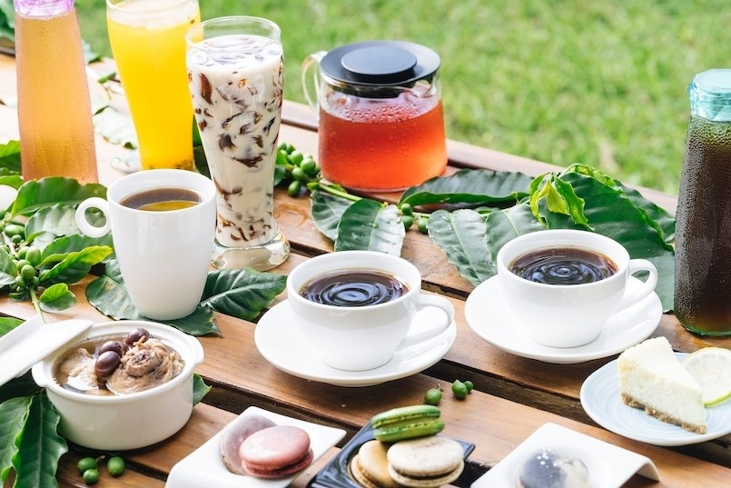
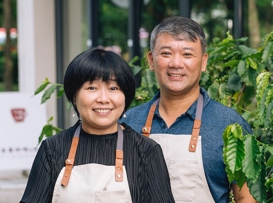

Tanya’s 泰食餐桌
- 0905 277 308
- 950台東縣台東市中華路一段376巷48號
- Tanya’s 泰食餐桌 FB
慢食評鑑履歷
2020年慢食評鑑一星
2022年慢食評鑑二星
與在地生產者合作，主廚Tanya因台東缺乏泰式餐廳，前往泰國學習， 回國後使用台東有機農場的香料，讓人們在品嚐正宗泰國料理同時也能享受慢食。
特色餐點
- 很泰打拋豬
艾蘭哥爾藝文咖啡館
- 08 933 5123
- 台東市浙江路350號小文創教室一樓
- 艾蘭哥爾藝文咖啡館 FB
慢食評鑑履歷
2020年慢食評鑑一星
2022年慢食評鑑二星
艾蘭哥爾的意思即為美麗遙遠的地方，是過去葡萄牙人對台東的稱呼。咖啡館坐落在台東美術館內，台東咖啡地圖高高掛在牆上，介紹台東各區的咖啡特色與風味。艾蘭哥爾致力於台東產業咖啡的推廣始於1974年，至今已有51年歷史。推廣生態農法不使用有機肥料與打造台東咖啡文化是老闆弘典的理想，就如艾蘭哥爾的菜單看似簡單，但內涵滿滿。
特色餐點
- 黑咖啡
- 花草茶
- 洛神花汁



日初禾作
- 0934 254 225
- 臺東縣關山鎮電光里中興25-1號
- 日初禾作 FB
慢食評鑑履歷
2020年慢食評鑑一星
2022年慢食評鑑二星
日初禾作社位在關山鎮海岸山脈側的電光部落內， 老闆黃瀚為了留在家鄉生活，畢業後立即返鄉投入推廣有機稻米及有機農業， 在家闢出一區吧台，透過阿美式的炙燒Silaw飯糰向到訪的旅客分享部落與土的滋味。
特色餐點
- 炙燒SIRAW飯糰
- 電光咖啡
柴米
- 08 932 4347
- 台東市正氣路406號
- 柴米 FB
讓季節旬食和地方風土成為餐桌上一部份吧。柴米堅持採購來自附近農場的農產品，並將其精心製作成一道道充滿地方風味的特色料理，讓顧客在餐桌上品味到的不僅是美食，更是一份自然與人文的交融。
特色餐點
- 野菜紫蘇飯糰
- 山胡椒松阪豬
- 紅烏龍鮮奶茶
秋香坊
- 0928 211 245
- 臺東縣臺東市關山鎮豐泉里大同路30號
- 秋香坊 FB
不喜歡擁擠喧鬧的環境嗎？來點更有特色的歡聚美宴吧。秋香坊食材皆來自台東在地，老闆精選最優質的新鮮食材，將每一口美味都變成對環境的呵護，讓顧客品嚐最自然的純粹。
特色餐點
- 彩色米麵疙瘩
- 馬告鹹豬肉